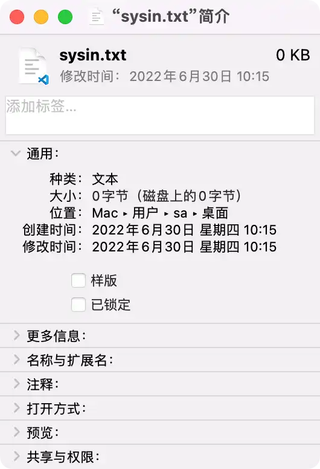
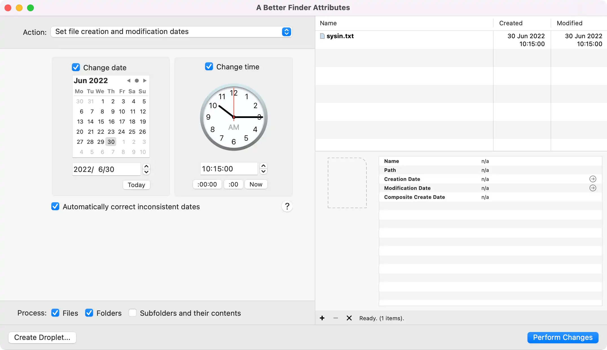
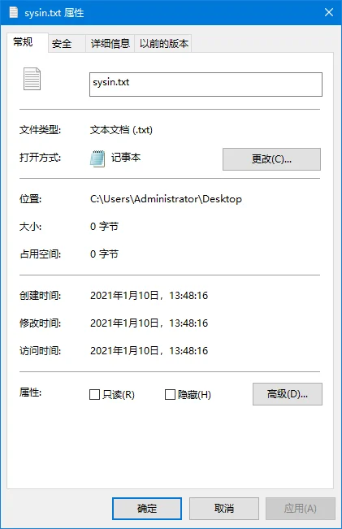
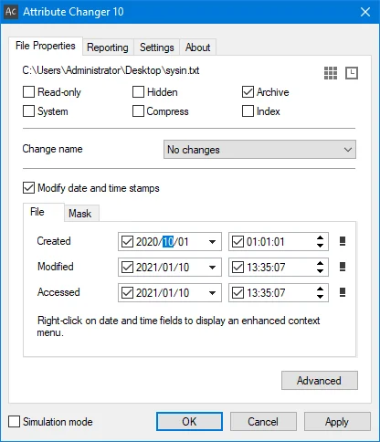

更新日期：Thu Feb 01 2024 08:00:15 GMT+0800，阅读量:
请访问原文链接：如何修改文件的 “创建时间” 和 “修改时间” (macOS, Linux, Windows) 查看最新版。原创作品，转载请保留出处。
作者主页：sysin.org
1. macOS（创建时间，修改时间）
图形界面（GUI）
在 macOS 中，点击文件右键 “显示简介”，显示 “创建时间” 和 “修改时间”。

在 Finder（访达）中，除了上述两个时间，同时会有 “上次打开日期” 和 “添加日期” 这两个特殊的文件属性。“上次打开日期” 记录了上次打开这个文件的最后时间，无论是否编辑和更改文件内容。“添加日期” 记录了文件在当前位置产生的时间，比如是新创建的一个文件，该时间等于创建时间，如果是复制的文件，或者通过网络下载的文件，该时间只是在当前位置产生的时间，与创建时间无关。这两个特殊的文件属性默认无法修改。
修改 “创建时间” 和 “修改时间” ：
推荐使用这个 App：A Better Finder Attributes（商业软件，自行搜索），操作简单便捷。

终端（Terminal）
在 Darwin 系统部分（Darwin 一般是指 macOS 的命令行部分），类似于 Linux 有 atime、mtime 和 ctime，但是还多了 birthtime 即创建时间。
直接使用 stat 命令可以查看文件时间属性，可以看到有 4 个时间，但是不友好，没法直接辨别。其实分别是：Access、Modify、Change 和 Birth。
但作为正统 Unix 系统，Darwin 的 stat 命令有额外的参数：
现在加上 -x 参数可以看到 Access、Modify、Change 和 Birth 四个时间。
之前的旧版系统中需要 -s 参数才能显示 birthtime。
1 2 3 4 5 6 7 8 9 10 11 12 13 14 15 16 17 18 19 # sysin @ macOS in ~/Desktop [17:32:20] $ stat sysin.txt16777225 9617704 -rw-r--r-- 1 sysin staff 0 0 "Feb 2 17:32:28 2023" "Feb 2 17:32:28 2023" "Feb 2 17:32:28 2023" "Feb 2 17:32:28 2023" 4096 0 0 sysin.txt # sysin @ macOS in ~/Desktop [17:32:32] $ stat -x sysin.txt File: "sysin.txt" Size: 0 FileType: Regular File Mode: (0644/-rw-r--r--) Uid: ( 501/ sysin) Gid: ( 20/ staff) Device: 1,9 Inode: 9617704 Links: 1 Access: Thu Feb 2 17:32:28 2023 Modify: Thu Feb 2 17:32:28 2023 Change: Thu Feb 2 17:32:28 2023 Birth: Thu Feb 2 17:32:28 2023 # sysin @ macOS in ~/Desktop [17:32:39] $ stat -s sysin.txtst_dev=16777225 st_ino=9617704 st_mode=0100644 st_nlink=1 st_uid=501 st_gid=20 st_rdev=0 st_size=0 st_atime=1675330348 st_mtime=1675330348 st_ctime=1675330348 st_birthtime=1675330348 st_blksize=4096 st_blocks=0 st_flags=0
修改时间可以使用 touch 和 setfile 命令
touch（Unix-like，修改时间 mtime 和访问时间 atime，无 “创建时间”）
1 2 3 4 5 6 7 8 9 10 11 12 13 14 15 16 # 修改 “修改时间” touch -m -t YYYYMMDDhhmm filename # 例如 touch -mt 202305181505 sysin.txt # 修改 “访问时间和修改时间” touch -t YYYYMMDDhhmm filename # 例如 touch -t 202305191505 sysin.txt # 释义 YYYY 年 - 四位数 MM 月 - 两位数 DD 日 - 两位数 hh 小时 - 两位数 mm 分钟 - 两位数
实例
1 2 3 4 5 6 7 8 9 10 11 12 13 14 15 16 17 18 19 20 21 22 23 24 25 26 27 28 # sysin @ macOS in ~/Desktop [17:32:50] $ touch -mt 202305181505 sysin.txt# sysin @ macOS in ~/Desktop [17:34:18] $ stat -x sysin.txt File: "sysin.txt" Size: 0 FileType: Regular File Mode: (0644/-rw-r--r--) Uid: ( 501/ sysin) Gid: ( 20/ staff) Device: 1,9 Inode: 9617704 Links: 1 Access: Thu Feb 2 17:32:28 2023 #没有变化 Modify: Thu May 18 15:05:00 2023 Change: Thu Feb 2 17:34:18 2023 #变更为命令执行的时间 Birth: Thu Feb 2 17:32:28 2023 #没有变化 # sysin @ macOS in ~/Desktop [17:34:24] $ touch -t 202305191505 sysin.txt# sysin @ macOS in ~/Desktop [17:36:13] $ stat -x sysin.txt File: "sysin.txt" Size: 0 FileType: Regular File Mode: (0644/-rw-r--r--) Uid: ( 501/ sysin) Gid: ( 20/ staff) Device: 1,9 Inode: 9617704 Links: 1 Access: Fri May 19 15:05:00 2023 Modify: Fri May 19 15:05:00 2023 Change: Thu Feb 2 17:36:13 2023 #变更为命令执行的时间 Birth: Thu Feb 2 17:32:28 2023 #没有变化
setfile（创建时间和修改时间）
需要安装 Xcode command line tools（命令：xcode-select --install）
1 2 3 4 5 6 7 8 setfile Usage: SetFile [option...] file... -a attributes # attributes (lowercase = 0, uppercase = 1)* -c creator # file creator -d date # creation date (mm/dd/[yy]yy [hh:mm[:ss] [AM | PM]])* -m date # modification date (mm/dd/[yy]yy [hh:mm[:ss] [AM | PM]])* -P # perform action on symlink instead of following it -t type # file type
实例
1 2 3 4 5 6 7 8 9 10 11 12 13 14 15 16 17 18 19 20 21 22 23 24 25 26 27 # sysin @ macOS in ~/Desktop [17:44:44] $ setfile -d '1/1/2023 18:18:0' sysin.txt # sysin @ macOS in ~/Desktop [17:44:49] $ stat -x sysin.txt File: "sysin.txt" Size: 0 FileType: Regular File Mode: (0644/-rw-r--r--) Uid: ( 501/ sysin) Gid: ( 20/ staff) Device: 1,9 Inode: 9617704 Links: 1 Access: Fri May 19 15:05:00 2023 #无变化 Modify: Fri May 19 15:05:00 2023 #无变化 Change: Thu Feb 2 17:44:49 2023 #变更为命令执行的时间 Birth: Sun Jan 1 18:18:00 2023 # sysin @ macOS in ~/Desktop [17:44:51] $ setfile -m '1/1/2023 20:18:0' sysin.txt # sysin @ macOS in ~/Desktop [17:45:09] $ stat -x sysin.txt File: "sysin.txt" Size: 0 FileType: Regular File Mode: (0644/-rw-r--r--) Uid: ( 501/ sysin) Gid: ( 20/ staff) Device: 1,9 Inode: 9617704 Links: 1 Access: Fri May 19 15:05:00 2023 #无变化 Modify: Sun Jan 1 20:18:00 2023 Change: Thu Feb 2 17:45:09 2023 #变更为命令执行的时间 Birth: Sun Jan 1 18:18:00 2023 #无变化
2. Linux（修改时间，访问时间）
这里仅描述 shell 中的情形，图形界面中未有关注。
注意：Linux（包括传统 Unix）中没有 “创建（creation）” 时间的概念。
查看文件时间信息（stat 命令）
现代 Linux 已经可以显示 Birth，即 “创建（creation）” 时间。
1 2 3 4 5 6 7 8 9 10 11 12 13 14 15 # 创建一个测试文件 # root @ A9 in ~ [17:59:07] $ touch sysin.txt# 使用 stat 命令查看文件时间信息 # root @ A9 in ~ [17:59:12] $ stat sysin.txt File: sysin.txt Size: 0 Blocks: 0 IO Block: 4096 regular empty file Device: 802h/2050d Inode: 201327432 Links: 1 Access: (0644/-rw-r--r--) Uid: ( 0/ root) Gid: ( 0/ root) Access: 2023-02-02 17:59:12.688566820 +0800 Modify: 2023-02-02 17:59:12.688566820 +0800 Change: 2023-02-02 17:59:12.688566820 +0800 Birth: 2023-02-02 17:59:12.688566820 +0800
有如下三种时间
Access: ATime —— 文件的最近访问时间。只要读取时间，ATime 就会更新。
Modify: MTime —— 文件的内容最近修改的时间当文件进行被写的时候，CTime 就会更新。
Change: CTime —— 文件属性最近修改的时间当文件的目录被修改，或者文件的所有者，权限等（包括文件内容被修改）被修改时 CTime 也就会更新。
touch 修改时间
1 2 3 4 5 6 7 8 9 touch 不仅可以创建文件，还可以对其进行时间的一些修改 格式：touch 参数 文件名 参数： -a: 修改访问时间，或 --time=atime 或 --time=access 或 --time=use -c: 或 --no-creat，如果文件不存在则不创建文件 -d: 使用指定的日期时间，可以使用不同的格式 -m: 或 --time=mtime 或 --time=modify，改变修改时间 -r: 把指定的文件日期更设成和参考文档或目录日期相同的时间 -t: 使用指定的日期时间，格式与 date 指令相同
命令格式：
1 2 3 4 5 6 7 8 9 10 11 12 13 14 15 16 # 修改 “修改时间” touch -mt YYYYMMDDhhmm filename # 例如 touch -mt 202305181505 sysin.txt # 修改 “访问时间和修改时间” touch -t YYYYMMDDhhmm filename # 例如 touch -t 202205191505 sysin.txt # 释义 YYYY 年 - 四位数 MM 月 - 两位数 DD 日 - 两位数 hh 小时 - 两位数 mm 分钟 - 两位数
实例：
1 2 3 4 5 6 7 8 9 10 11 12 13 14 15 16 17 18 19 20 21 22 23 24 25 26 27 # root @ A9 in ~ [17:59:18] $ touch -mt 202305181505 sysin.txt# root @ A9 in ~ [18:00:19] $ stat sysin.txt File: sysin.txt Size: 0 Blocks: 0 IO Block: 4096 regular empty file Device: 802h/2050d Inode: 201327432 Links: 1 Access: (0644/-rw-r--r--) Uid: ( 0/ root) Gid: ( 0/ root) Access: 2023-02-02 17:59:12.688566820 +0800 #无变化 Modify: 2023-05-18 15:05:00.000000000 +0800 Change: 2023-02-02 18:00:19.020083479 +0800 #变更为命令执行时间 Birth: 2023-02-02 17:59:12.688566820 +0800 #无变化 # root @ A9 in ~ [18:00:21] $ touch -t 202205191505 sysin.txt# root @ A9 in ~ [18:01:00] $ stat sysin.txt File: sysin.txt Size: 0 Blocks: 0 IO Block: 4096 regular empty file Device: 802h/2050d Inode: 201327432 Links: 1 Access: (0644/-rw-r--r--) Uid: ( 0/ root) Gid: ( 0/ root) Access: 2022-05-19 15:05:00.000000000 +0800 Modify: 2022-05-19 15:05:00.000000000 +0800 Change: 2023-02-02 18:01:00.226404438 +0800 #变更为命令执行时间 Birth: 2023-02-02 17:59:12.688566820 +0800 #无变化
Change: CTime 没有直接修改方法，最简单的办法是修改系统时间：
1 NOW=$(date) && date -s "2023-09-05 08:00:00" && touch sysin.txt && date -s "$NOW"
示例，修改当前目录下所有文件和目录的三个时间为指定时间 ：
1 NOW=$(date) && date -s "2023-09-05 08:00:00" && touch * && date -s "$NOW"
注意：
不包含隐藏文件和目录，如要包含使用 .*
* 包含 *.*，*.* 表示文件名中有 . 的文件，或称有扩展名。如果当前目录下仅有隐藏文件和目录，或者没有任何文件和目录，此命令将创建一个名称为 * 的特殊文件。
3. Windows（创建时间，修改时间，访问时间）
图形界面
点击一个文件右键 “属性” 即可查看文件的时间属性，可以看到有 “创建时间”、“修改时间” 和 “访问时间” 三个属性。

创建时间：该文件在本载体本地址上创建的时间
修改时间：在属性中保存的最后一次修改的时间
访问时间：在属性中保存的最后一次访问的时间
“创建时间” 和 “修改时间” 比较好理解，但 “访问时间” 似乎有点特殊，查看文件属性、打开文件查看，甚至设置 “只读”、“隐藏” 属性都不会改变 “访问时间”。只有在对文件进行编辑后访问时间才会改变。这也就是我们会发现访问时间与修改时间是一样的原因。
修改时间的工具 ：
百度网盘链接：https://pan.baidu.com/s/1753tq2vPgHdZ7SfPXQGPLg 提取码：phrb

命令行修改
CMD ：
1 2 3 4 5 6 7 8 9 10 11 # 修改当前系统时间 date 2021/01/01 time 10:59:30 # 修改时间，注意是连续两个英文逗号 copy 文件名 +,, # 修改时间和访问时间，注意是连续两个英文句号 copy 文件名 +.. # 注意修改完毕需要将系统时间修改过来（或者等待 NTP 同步）
小技巧：在文件夹上添加 “命令提示符” 右键快捷访问菜单
1 2 3 echo Shell Menu: Command Prompt reg add "HKEY_CLASSES_ROOT\Folder\shell\CmdPrompt" /v "" /t REG_SZ /d "Command Prompt" /f reg add "HKEY_CLASSES_ROOT\Folder\shell\CmdPrompt\command" /v "" /t REG_SZ /d "cmd.exe /k cd %%l" /f
Powershell （推荐）
1 2 3 4 5 6 7 set t '01/01/202 01:01:01' # 时间格式：MM/DD/YYYY hh:mm:ss echo $t ls 'sysin.txt' | foreach-object {$_.LastWriteTime = $t; $_.CreationTime = $t; $_.LastAccessTime = $t} # 也可以单独设置不同的时间 ls 'sysin.txt' | foreach-object {$_.LastWriteTime = '01/01/2021 01:01:01'; $_.CreationTime = '02/02/2021 01:01:01'; $_.LastAccessTime = '03/03/2021 01:01:01'}
小技巧：在文件夹上添加 “PowerShell” 右键快捷访问菜单
1 2 3 echo Shell Menu: PowerShell reg add "HKEY_CLASSES_ROOT\Folder\shell\PowerShellMenu" /v "" /t REG_SZ /d "PowerShell" /f reg add "HKEY_CLASSES_ROOT\Folder\shell\PowerShellMenu\command" /v "" /t REG_SZ /d "powershell.exe -NoExit -Command Set-Location -LiteralPath '%%L'" /f
讨论
讨论：文件的时间属性存储在哪里？
如果存储在文件本身之中，那么修改文件时间属性，为什么 hash 不会变化？
如果存储在当前系统的文件系统之中，那为什么文件经过传输，时间属性却没有变化，或者有时候时间属性都改变了？
压缩包或者可以包含文件及目录的载体如 iso 文件，时间属性变更了，其中包含的文件时间属性为什么可以保持不变？
文章用于推荐和分享优秀的软件产品及其相关技术，所有软件默认提供官方原版（免费版或试用版），免费分享。对于部分产品笔者加入了自己的理解和分析，方便学习和研究使用。任何内容若侵犯了您的版权，请联系作者删除。如果您喜欢这篇文章或者觉得它对您有所帮助，或者发现有不当之处，欢迎您发表评论，也欢迎您分享这个网站，或者赞赏一下作者，谢谢！
☑️ 评论恢复，欢迎留言❗️敬请注册！点击 “登录” - “用户注册 ”（已知不支持 21.cn/189.cn 邮箱）。请勿使用联合登录（已关闭） 。

 支付宝赞赏
支付宝赞赏
 微信赞赏
微信赞赏